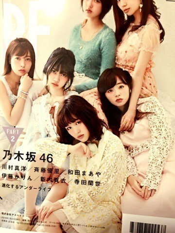
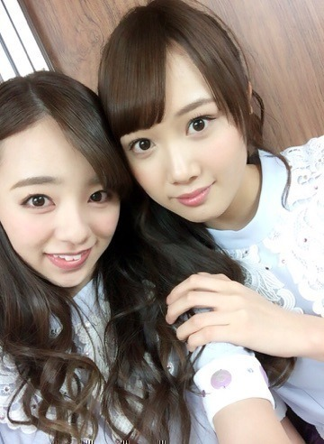
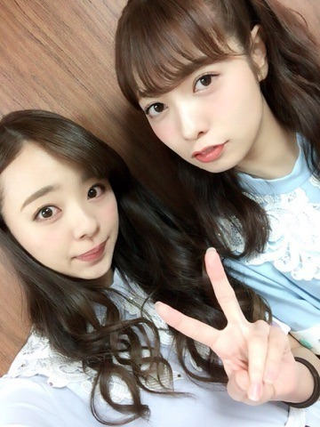
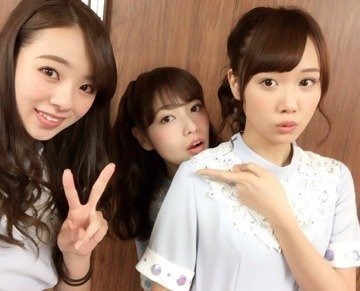
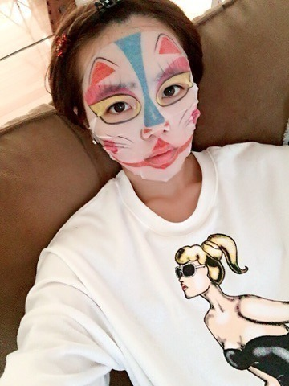

こんにちわ^ ^
川村まひろです！ノ
PF「ポーカーフェイス」発売中です♡
私達が裏表紙をやらせて頂いてます．
中にはソロカット等もあるので，是非チェックよろしくお願いしますね♡

はい！と言うことで、
アンダラとXmasLIVE共に，無事終了致しました～^ ^♪♪ お疲れ様でした．
...やっぱり私達にとって
アンダラで武道館は大きかったですね♡
集まってくれた皆さんありがとうございました^ ^ノ １７日も１８日も本当に最高のLIVEになりました！！！
センター企画、私は「そんなバカな・・・」でした．
スタッフさんにイントロ自由に使って！と言われ，らりんの勧めもあって、ロックダンスをしました．笑
⇧これをすると皆が喜んでくれるんですよね♡ぇへ
らりんと♡

そしてそして，ノンストップコーナーもありまして，最初の何曲かは休憩なしでぶっ通しでした...
武道館という広さのステージでノンストップだと20歳超え組（まいちゅん♡）の体力が持たないということで途中で終わりました*\(^o^)/*ぁはは
でもやっぱ私はアンダラならではの
あのLIVE感のあるノンストップコーナーが大好きですね*\(^o^)/**\(^o^)/*
元気いっぱいゆうりさん。♡

そして、らりんの卒業発表もありましたね。
皆さんも突然の発表にびっくりしたと思います（ ; ; ） 私とゆうりは本人の口から報告はされていました．その時は3秒程静止しましたね．それでゆうりと2人でじゅうたんの上に転げ落ちました．泣き笑いみたいな状態になって，何度もらりんに「ぇ、本当に⁉︎」と聞き直してました．
まだ卒業まで時間があるので、
今までと変わらず，一緒に沢山笑って楽しい時を過ごしたいと思います♡
だいすきだぁ。

会場がらりんのサイリウムカラーの黄色でいっぱいになった時は感動しました...
そしてXmasLIVEの時の「失いたくないから」でも黄色が沢山ありました... 泣きそうになりました（ ; ; ） 泣かないけどね♡笑ぁは
なんかしんみりしちゃったなぁ～、、、
と言うことで、
じゃじゃ～～ん。♡♡♡

フェイスパック！！！
今日は久々のお休み♡
お家のソファでまったりできました^ ^
この写真をお母さんに送ったら
『なんやー‼️
このメイクは何((((；ﾟДﾟ)))))))？？』
って返事がきました。。。
ウチのお母さんはいつまでも天然です♡笑
どこまで天然なんだよ^ ^ってことばっかで
いつも期待を裏切らないです。
面白いですよ^ ^笑ノ
と言うことで，またblog更新します♡
またね～ん。